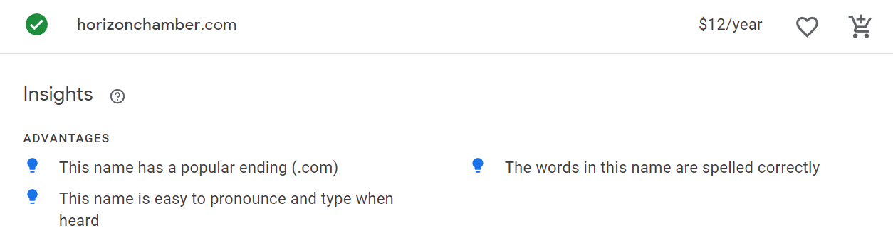

Site Name
The Horizon Chamber of Commerce was named with a vision of a better future in mind. The word 'horizon' evokes a sense of possibility, growth, and new opportunities. It represents the bright future that our members and the local business community strive for. The chamber is committed to fostering economic growth and development, supporting local businesses, a nd creating a thriving business environment for our community. The name 'Horizon Chamber of Commerce' embodies our commitment to progress, innovation, and the pursuit of a better tomorrow.
Site Purpose
The purpose of the Horizon Chamber of Commerce website is to serve as a vital online resource for the local business community. Our website aims to provide easy access to a wide range of services, resources, and information that will help local businesses thrive and grow. We strive to foster economic growth and development in the region by promoting local businesses and providing a platform for networking, collaboration, and community involvement. Our website is designed to provide valuable resources such as business development tools, a comprehensive member directory, an events calendar, and relevant news and updates that are specific to the local business community. Our goal is to create a robust and engaging online environment that supports local businesses and helps to drive economic growth in the region.
Domain Name
The domain URL will be horizonchamber.com
